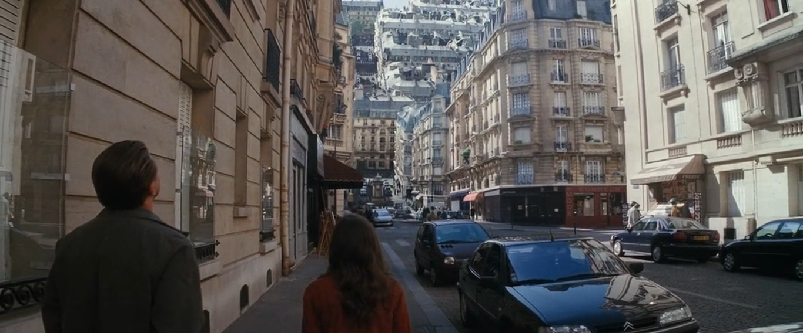
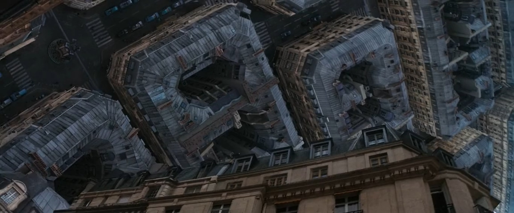

My Favorite Movies

Inception
.mp4_20210204_102331.217.jpg)
Midnight in Paris

.mp4_20210204_102331.217.jpg)
.mp4_20210204_102336.736.jpg)
.mp4_20210204_102338.792.jpg)
.mp4_20210204_102354.110.jpg)
My name is Mikias Aytenfisu. I am 25 years old. I was born and raised in Bahir Dar.
I finished secondary school at Bahir Dar Academy. Then I joined Addis Ababa Institute of Technology. After receiving a pre-engineering
course and one semester mechanical engineering course I withdraw from AAIT and joined Ethiopian Airlines as Aircraft Engine mechanic
Trainee. After working three years at Ethiopian Airlines, I
I learned for the first time the formula for water is H2o when I was in Grade 7 my most favorite math formula is the one that solve a quadratic equation of the form aX2 + bX + c = 0
Elementary school
Middle School
High School
I attended most of my Elementary School at Bahir Dar Academy. But before joining Bahir Dar Academy I studied at a school called Brhan Tesfa for a year . I hated this school since the first time I joined. From the start it was far from my house and I had to walk all the way. A year passed in Brhan Tesfa without having slightest affection for it. The one important thing I benefited from it was I met my Best Friend who I am going to stay friend to until now. Then due to my weak academic performance at Brhan Tesfa, my father decided to enroll me to Bahir Dar Academy. It is the best private school in Bahir Dar. It was just getting established at that time. I was Grade 2. My Elementary period was from 2-6 grade. During this time I experienced the most memorable times. me and my friends were just kids. And our school's campus was so wide but we couldn't get enough of running from edge to edge. I remember When i was Grade 4 student every morning our class will always say "we are the solution for Ethiopia" before the beginning of the first period. Our teachers at this time were like our parents. They treated us as if we were their child. My classmate's feeling was no different. Grade Four is my best class of all time.
Significant memory of this time is that it is when I start to take my Eduction seriously. The introduction of new subjects like Physics, Chemistry, and Biology was enough to make me read a little everyday. My friends were surprised by my change. I was ranked 6 out of 50 students at grade 7. Then Grade 8 was spent with a type of tension we were not accustomed to. We were going to take Ministry Examination, out first regional examination. I scored 99.6 percentile and i was excited.
I was still at Bahir Dar Academy. Lots of things happened during this time. The most memorable one is our class trip to Gondar to visit Dashen Beer's Factory. The trip was made by our Chemistry teacher. All my classmates attended the trip. Unexpected things occured after we saw the factory and while we were eating lunch thier. Some of my classmates dared to drink the draft that was made in the factory. It was their first time of drinking alchol and the draft was strong. Unfortunately they got drunk. They were fighting against each other, insulting the teachers in the bus which nearly got our visit to Fasiledes Castle cancelled. Then we went to Fasiledes. Our drunk friends stole the show, we were enjoying the time at Fasiledes but they were having the time of their life. In addition to admiring this majestic place me and my sober friends had an added duty of looking over our drunk friends who kept doing stupid and funny things. This trip was over with loads of photos to remind us the precious and unforgettable times.
Inception
Midnight in Paris